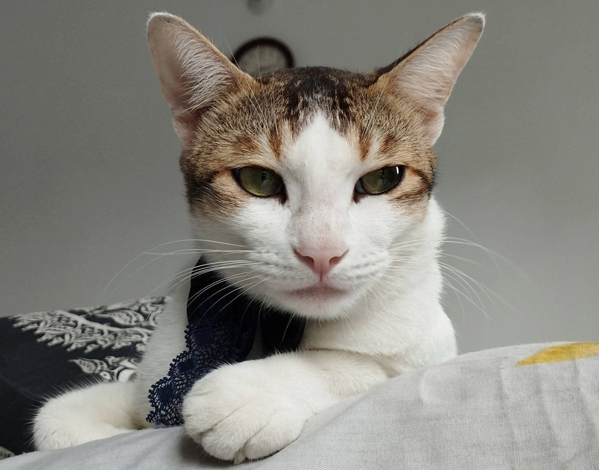
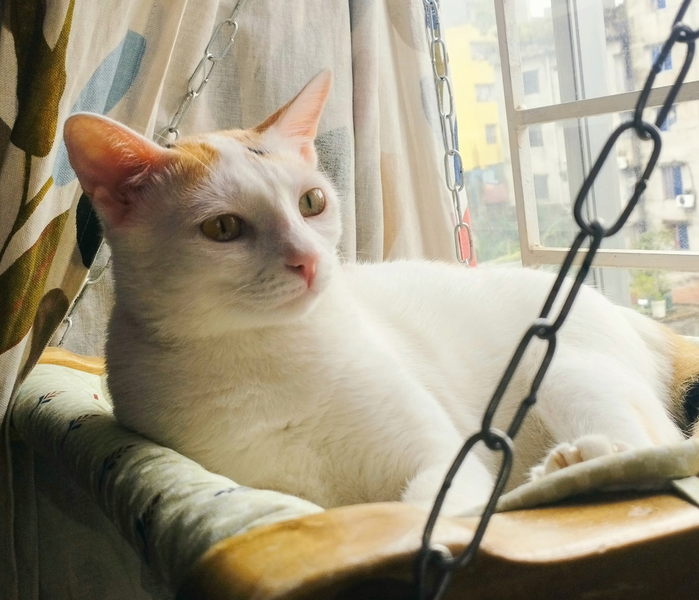
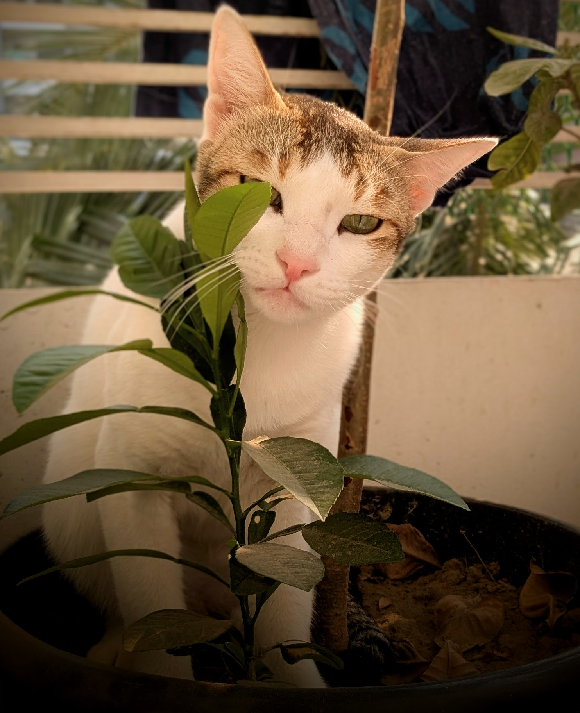
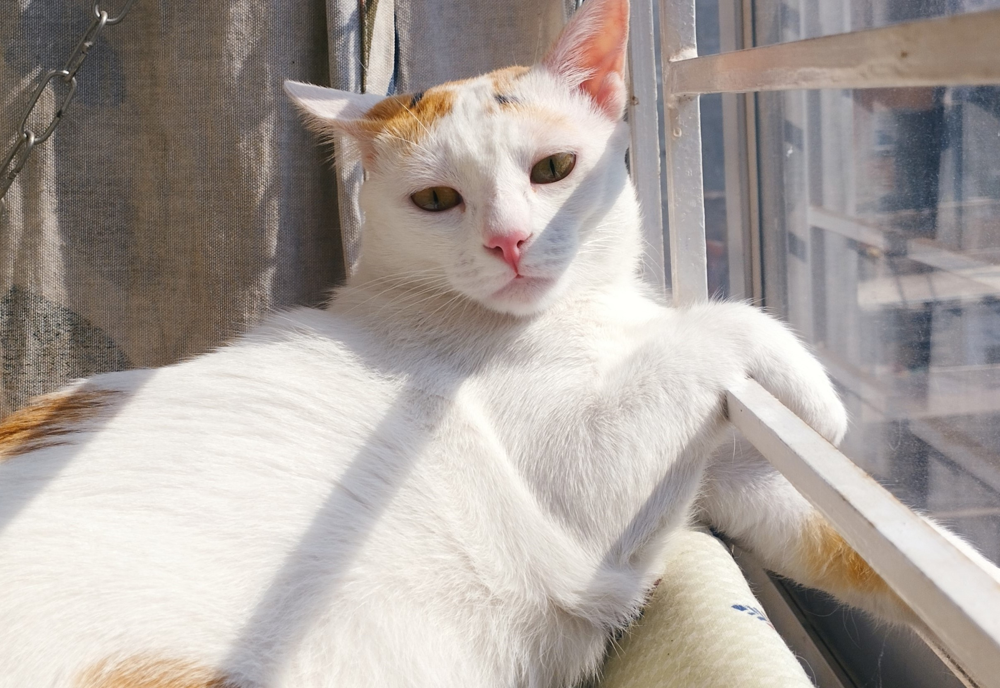
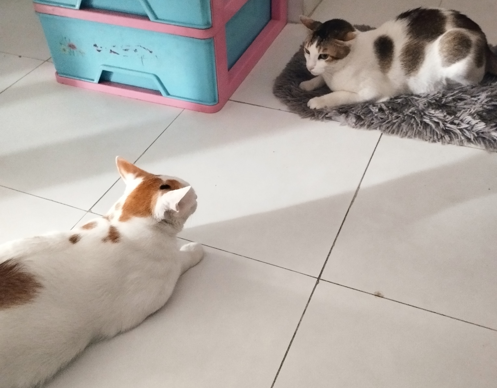
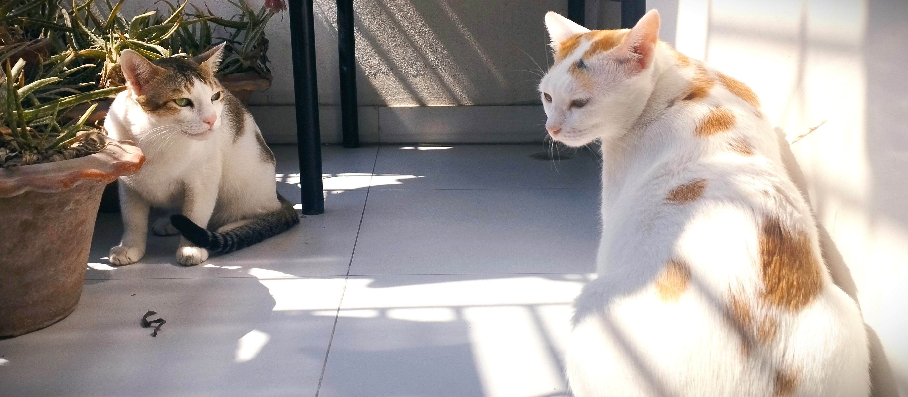
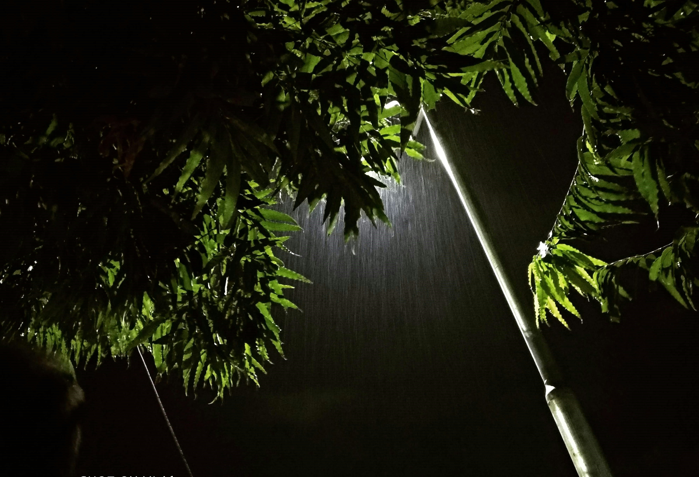
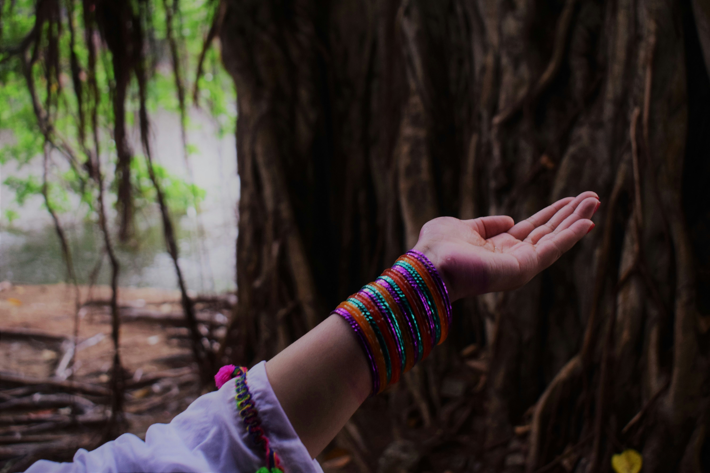
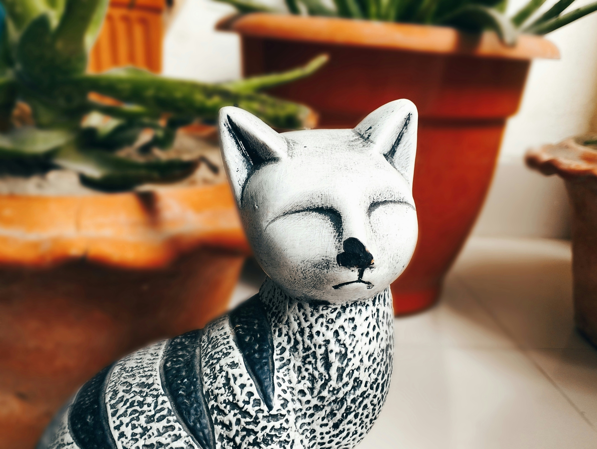
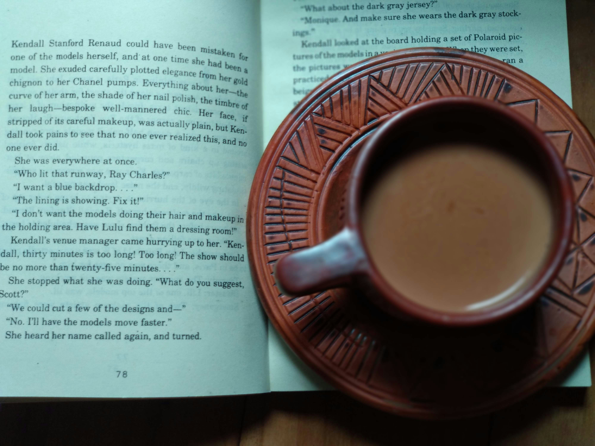

Beyond Research
A few of the creative and reflective pursuits that shape how I think about storytelling, emotion, and the human experience.
Lochon & Floria
My lifelong affection for cats began in early childhood. What started as a mouser brought home by my father blossomed into a profound empathy and connection that has stayed with me through every stage of life.
Lochon
At four years old, Lochon is the vocal heartbeat of the house. Though often anxious and paranoid, she expresses her energy through endless dashes around the home.
Floria
At two years old, Floria is the perfect contrast — quiet, relaxed, and a lover of sleep. While she occasionally joins the chase, she represents the calm in the household.






Capturing Fleeting Beauty
Photography is a tool to seize fleeting beauty and encapsulate significant moments. I find particular joy in framing the intricate artistry of the natural world. More of my work is on Unsplash.




From Fairy Tales to Bengali Classics
When I was very young, I loved fairy tales — they felt like magical doors to amazing places. Though I have grown, the bright covers in a bookstore still evoke that old magic. In my teens, I immersed myself in the works of Bengali masters, often finishing novels in just a couple of days.
Live Theatre
"I find immense pleasure in attending theatre plays. They offer a refreshing escape from everyday life, allowing me to immerse myself in worlds distinct from the scientific realm I often inhabit."
Company
A powerful portrayal of British colonial exploitation and the historical fall of Siraj Ud-Doula.
Chitrangada
An intimate production with a circular stage that placed the performers directly among the audience.